Grid: 1024 x 512 (0.35 x 0.31 deg) | Lat: -79.5 to 79.5 | Lon: -180 to 180
All data fetched from native-resolution sources via Google Earth Engine and WOA23 OPeNDAP. Click any map to view full resolution.
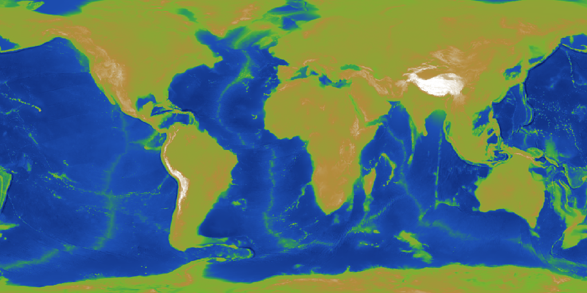
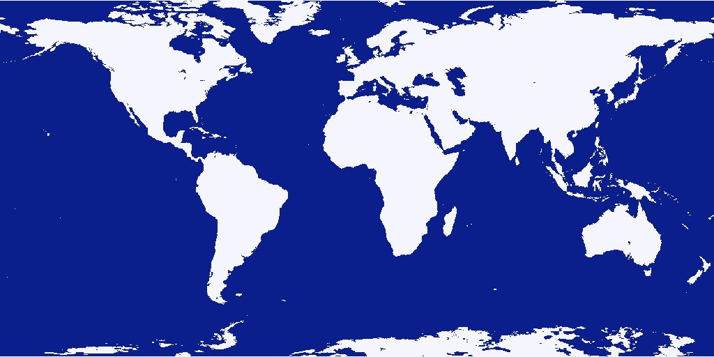
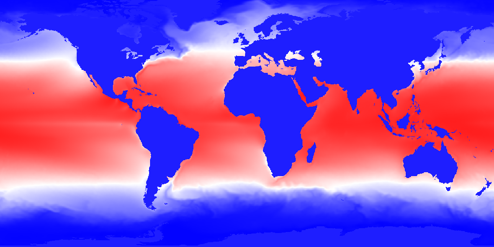
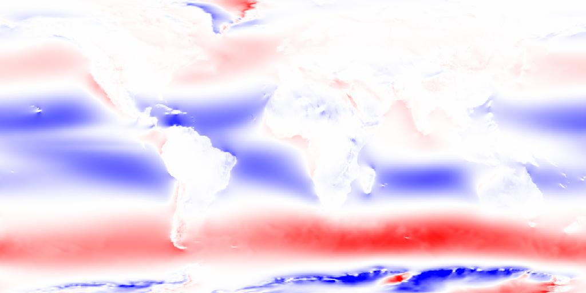
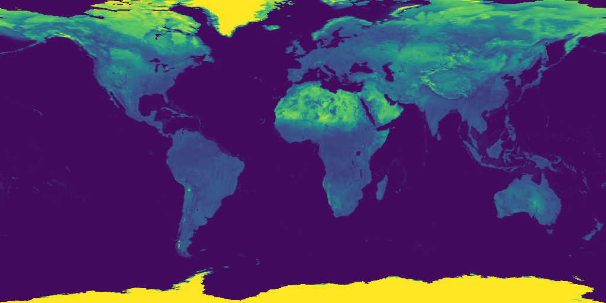
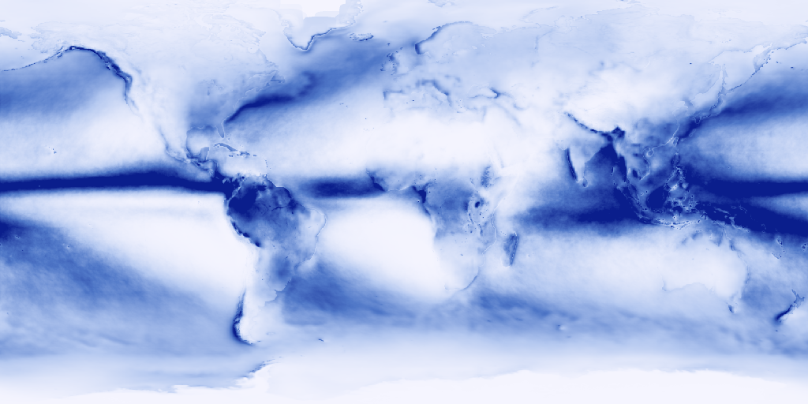
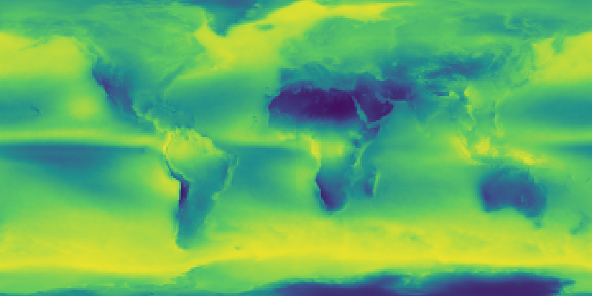
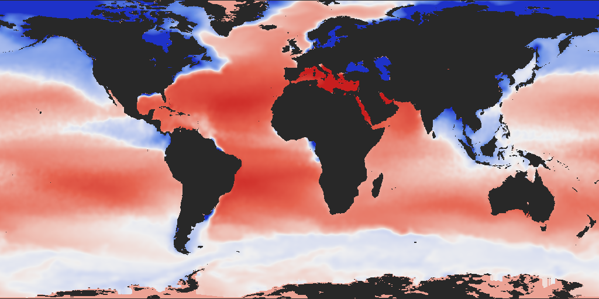
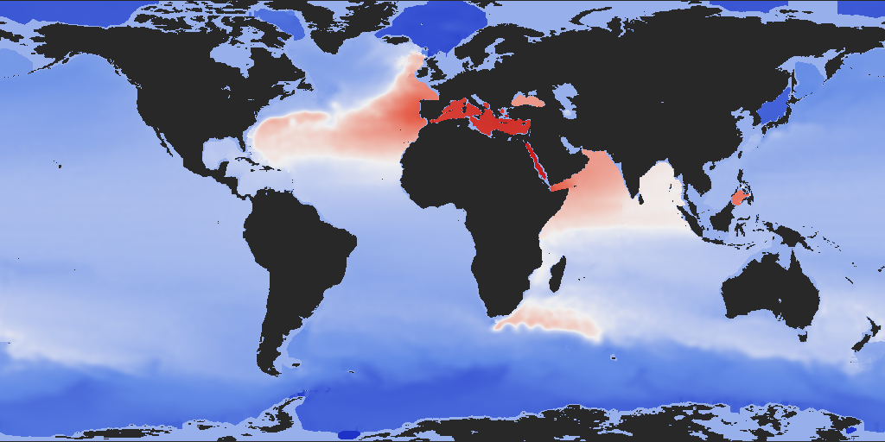
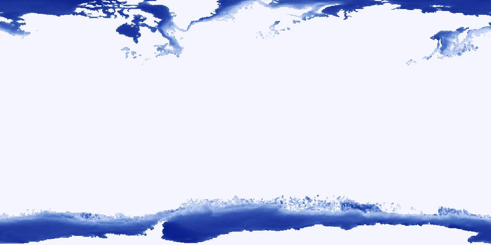
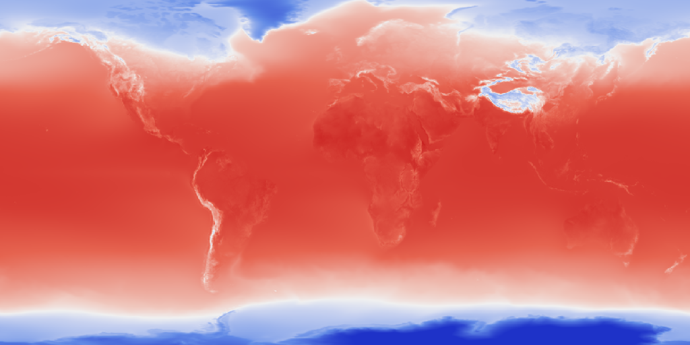
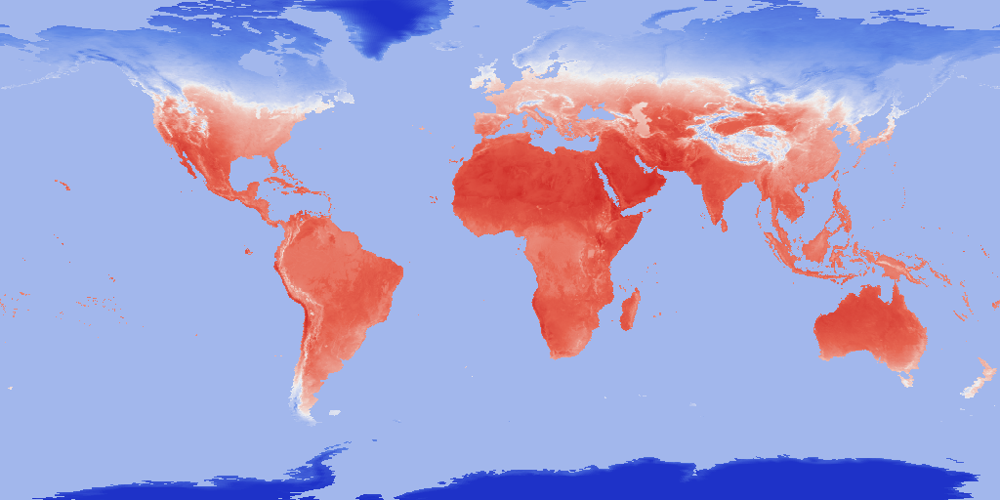
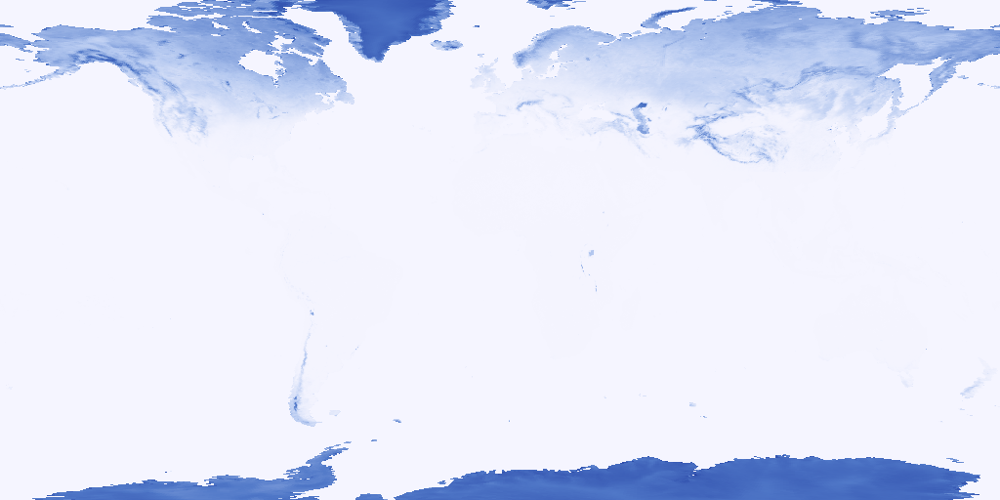
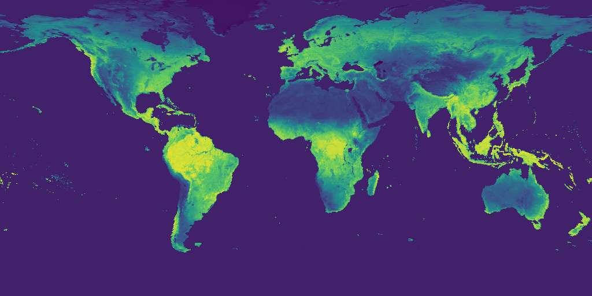
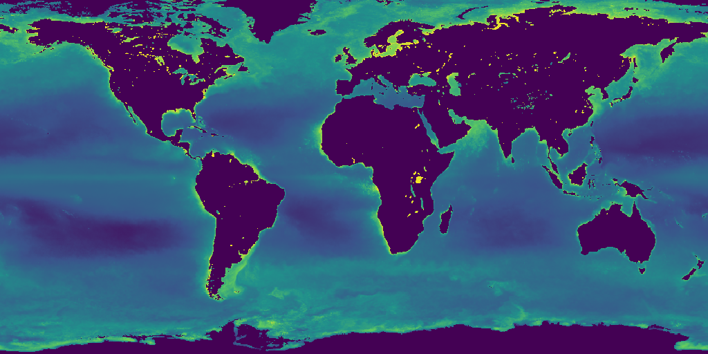
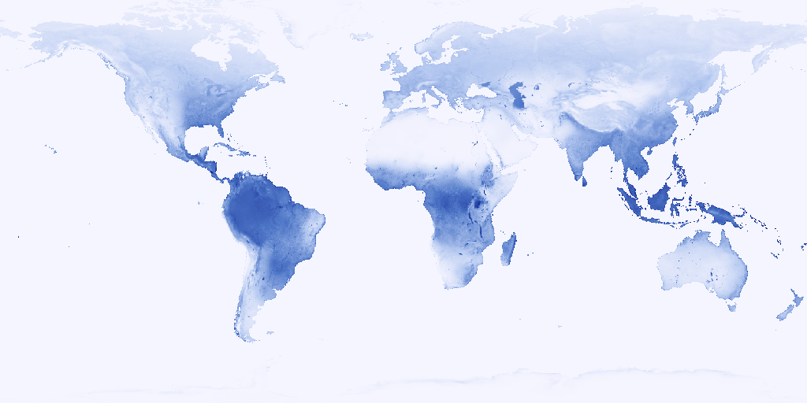
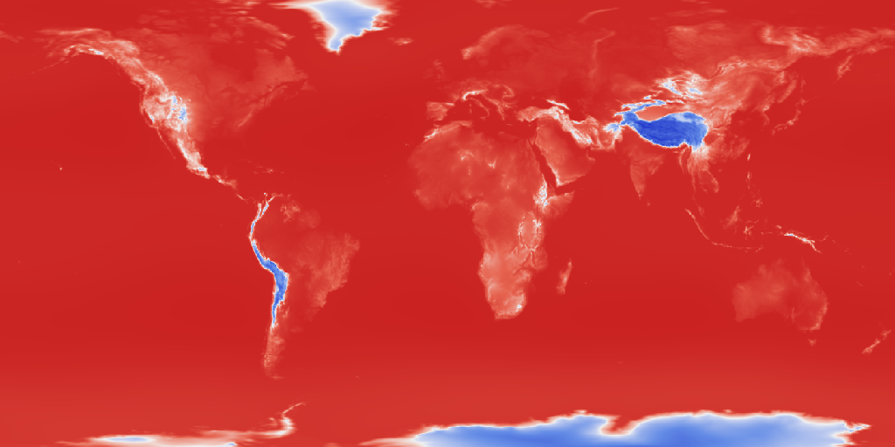
| File | Grid | Size | Date Range | Source |
|---|---|---|---|---|
bathymetry.json | 1024x512 | 4.3 MB | Static | ETOPO1 bedrock via Earth Engine |
mask.json | 1024x512 | 128 KB | - | Derived from ETOPO1 |
sst.json | 1024x512 | 3.1 MB | 2015-2023 | NOAA OISST v2.1 CDR annual mean |
wind_stress.json | 1024x512 | 15 MB | 1991-2020 | ERA5 Monthly 10m wind, bulk stress |
albedo.json | 1024x512 | 3.4 MB | 2020-2023 | MODIS MCD43A3 WSA shortwave |
precipitation.json | 1024x512 | 2.7 MB | 2015-2023 | GPM IMERG V07 monthly, land+ocean |
cloud_fraction.json | 1024x512 | 3.5 MB | 2020-2023 | MODIS MOD08_M3 cloud fraction |
salinity.json | 1024x512 | 4.0 MB | 1991-2020 | WOA23 surface salinity via OPeNDAP |
deep_temp.json | 1024x512 | 3.6 MB | 1991-2020 | WOA23 temp at 1000m via OPeNDAP |
sea_ice.json | 1024x512 | 2.8 MB | 2015-2023 | NOAA OISST v2.1 ice concentration |
air_temp.json | 1024x512 | 3.5 MB | 2015-2023 | ERA5 2m air temperature (Celsius) |
land_surface_temp.json | 1024x512 | 2.9 MB | 2020-2023 | MODIS MOD11A1 daytime LST |
snow_cover.json | 1024x512 | 2.8 MB | 2020-2023 | MODIS MOD10A1 NDSI snow cover |
ndvi.json | 1024x512 | 3.0 MB | 2020-2023 | MODIS MOD13A3 NDVI |
chlorophyll.json | 1024x512 | 3.6 MB | 2020-2023 | MODIS Aqua chlorophyll-a (mg/m3) |
evaporation.json | 1024x512 | 1.8 MB | 2015-2023 | ERA5-Land total evaporation (mm/yr) |
surface_pressure.json | 1024x512 | 3.9 MB | 2015-2023 | ERA5 surface pressure (hPa) |